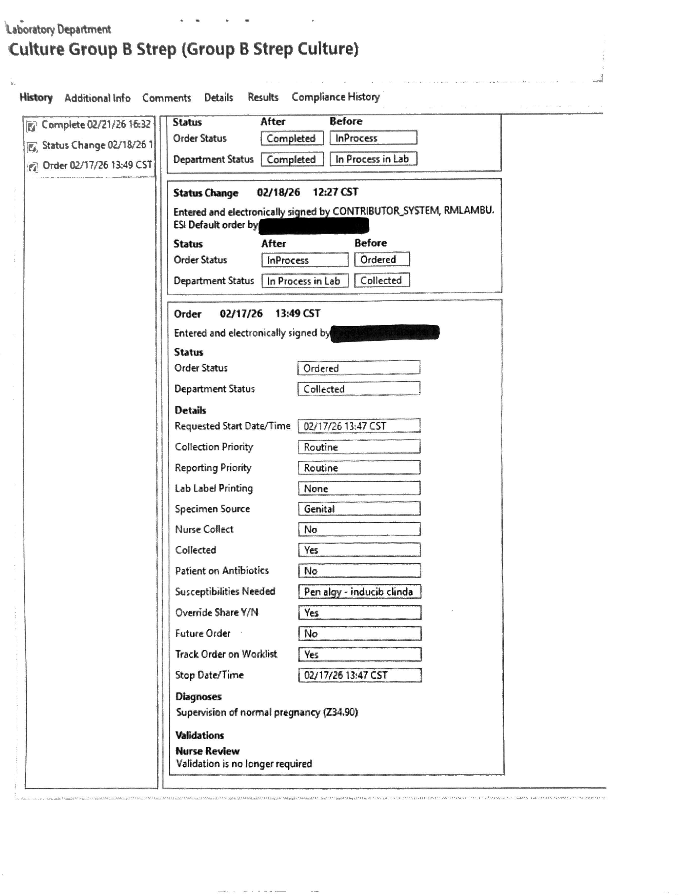

It is unknown whether "penicillin allergy" as entered in the Cerner free-text field was fully transmitted to the reference lab system. This is part of the ongoing investigation. May represent a systemic issue affecting other allergy patients.

Determine the exact mechanism of lab failure. Did the Cerner field text not transmit? Was it ignored? Implement corrective action with lab leadership and document for quality reporting.
Modify prenatal GBS order set to automatically trigger susceptibility testing when penicillin allergy is documented — eliminate reliance on a free-text field that may be truncated or misinterpreted.
Build EMR alert: "GBS positive — susceptibilities absent" triggered when allergy flag is present. Alert fires at result receipt and at the next prenatal encounter closest to term.
Standardize a prenatal visit checklist confirming susceptibility results are received and charted for all GBS+ patients with any documented antibiotic allergy — before the patient can reach the labor floor.
Without it, we default to vancomycin. When the isolate is sensitive, clindamycin is preferred — and that information requires a susceptibility result.
20 mg/kg q8h achieves 83% neonatal therapeutic levels vs 9% with the old 1g q12h. Cerner's OB default should be updated — this is an action item for pharmacy and OB leadership.
The order was placed correctly. The failure was downstream in the lab. Pointing at individuals derails learning — we need structural fixes: alerts, auto-orders, checklists.
Discovering a missing susceptibility at labor admission is too late. The 36-week prenatal visit is the last safe opportunity to find and fix this gap.
| Regimen | Dose | Interval | Neonatal therapeutic % |
|---|---|---|---|
| Cerner OB default (current) | 1 g IV | q12h | 9% — subtherapeutic |
| ACOG 2020 standard | 20 mg/kg IV | q8–12h (max 2 g) | 83% — therapeutic ✓ |
| This case | 2 g IV × 1 | Single dose, 3.5h pre-delivery | Flat dose, single dose — likely suboptimal |
| Infusion rate | ≥60 min; >90 min for doses >1.5 g | Faster → red man syndrome risk | |